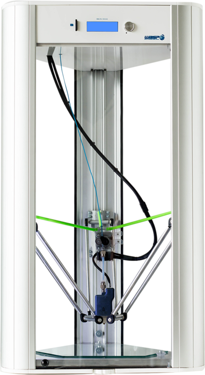
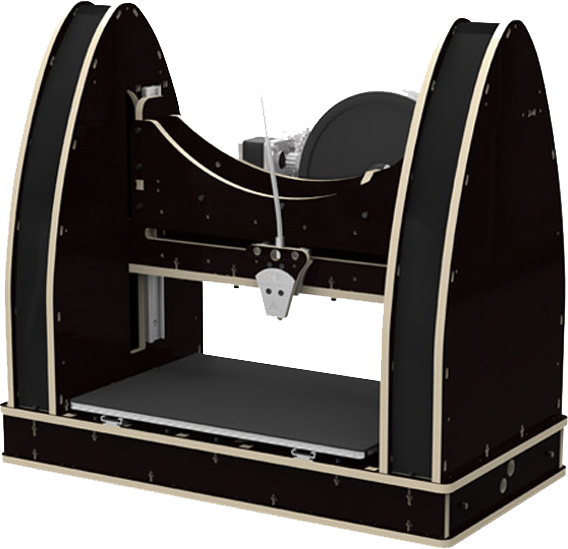
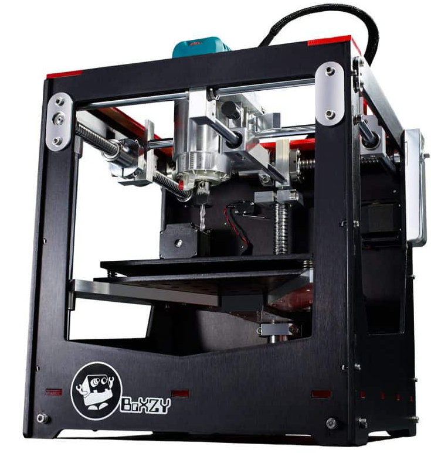
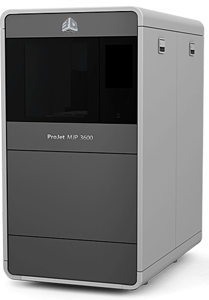
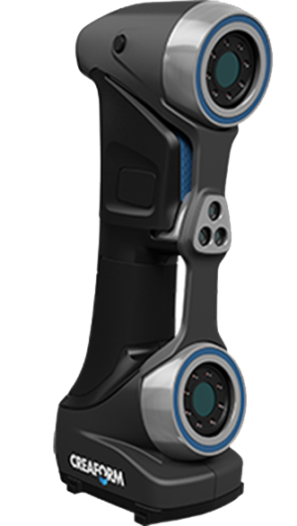
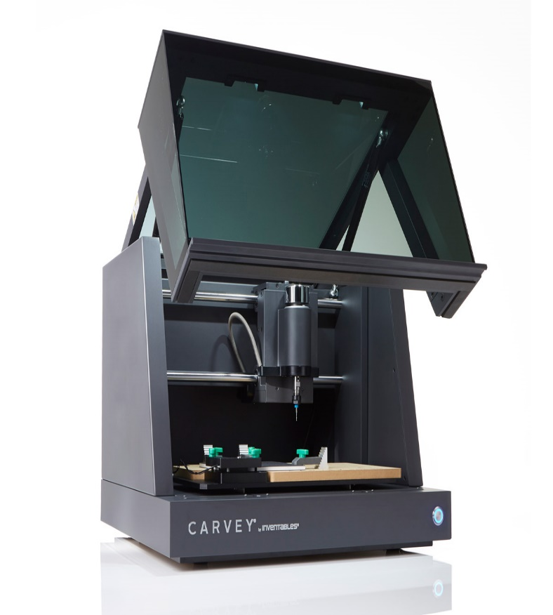
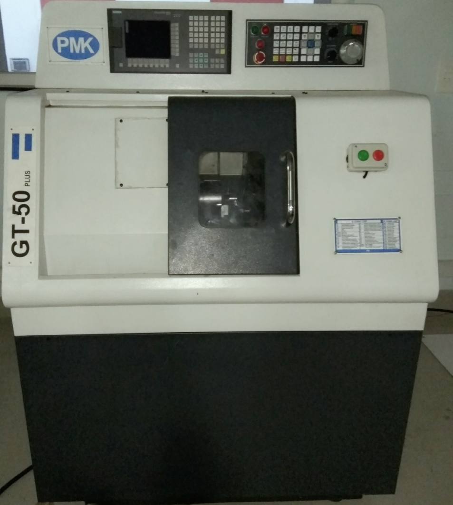
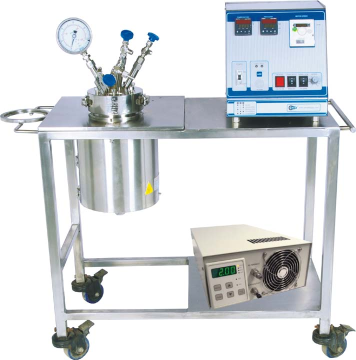

3D printers
Ultimaker 2 Extended+

| Build plate | 50°C to 100°C heated glass build plate |
| Layer resolution |
0.25 mm nozzle: 150 to 60 micron 0.40 mm nozzle: 200 to 20 micron 0.60 mm nozzle: 400 to 20 micron 0.80 mm nozzle: 600 to 20 micron |
| Print technology | Fused Deposition Modelling (FDM) |
| Build-volume | 223 x 223 x 305 mm |
| Print head | travel speed 30 to 300 mm/s |
| XYZ accuracy | 12.5, 12.5, 5 micron |
| Nozzle diameter | 0.25, 0.4, 0.6 and 0.8 mm |
| Nozzle temperature | 180 °C to 260 °C |
| Filament diameter | 2.85mm |
| Supported materials | PLA, ABS, CPE, CPE+, PC, Nylon, TPU 95A |
Delta Wasp 2040

| Build plate | 50°C to 100°C heated glass build plate |
| Layer resolution | 50 microns |
| Print technology | Fused Deposition Modelling (FDM) |
| Cylindric print area | Ø 200 mm – 400 mm h |
| Print head travel speed | 30 to 300 mm/s |
| Nozzle diameter | 0.4 mm (0.7 mm, 0.9 mm) |
| Nozzle temperature | 180 °C to 260 °C |
| Filament diameter | 1.75 mm |
| Supported materials | PLA, ABS, Flex, HIPS, PETG |
| Changeable extruder | Porcelain |
Power Wasp EVO

| Build plate | 50 °C to 100 °C heated glass build plate |
| Print resolution | 50 microns |
| Print technology | Fused Deposition Modelling (FDM) |
| Build-volume | 260x195x190 mm |
| Print head travel speed | 30 to 200 mm/s |
| XYZ accuracy | 12, 12, 4 micron |
| Nozzle diameter | 0.4 mm |
| Nozzle temperature | 180 °C to 260 °C |
| Filament diameter | 1.75mm |
| Supported materials | ABS, PLA, PET, Nylon, Flex, Polystyrene, Laywood |
| Changeable extruder | Clay, Resin |
BoXZY

| 3D printing | |
|---|---|
| Layer resolution | 20 microns |
| Print technology | Fused Deposition Modelling (FDM) |
| Build Volume | 165x165x165 mm |
| Print head travel feed | 30 to 300 mm/s |
| Nozzle diameter | 0.4 mm |
| Nozzle temperature | 180°C to 260°C |
| Filament diameter | 1.75 mm |
| Supported materials | PLA, ABS, Ninja |
| Milling | |
| Material | ABS, Acetal, Brass, Bronze Silver, PVC |
| Laser engraving | |
| Spectrum | 445 nm |
| Material | Hardwoods, Opaque Plastic, Anodized Aluminium |
3D System’s Projet MJP 3600

| Build Volume |
HD298 x 183 x 203 mm UHD & XHD 203 x 178 x 203 mm |
||||||||||||||
| Printing Technology | Multijet Printing | ||||||||||||||
| Resolution XYZ |
HD Mode: 32 micron UHD Mode: 29 micron XHD Mode: 16 micron |
||||||||||||||
| Build Materials |
|
||||||||||||||
| Support Material | Wax |
3D scanners
NextEngine’s MultiStripe Laser Triangulation

| Field size | 5.1" x 3.8" (Macro) and 13.5" x 10.1" (Wide) |
| ProScan extended mode | 22.5” x 16.75” |
| Capture density | On target surface capture up to 268K points/in²(Marco), 29K points/in² (Wide). |
| Texture density | 500 DPI in Macro Mode and 200 DPI in Wide Mode |
| Dimensional accuracy | ±0.005" in Macro Mode and ±0.015" in Wide Mode |
| Acquisition speed | 50,000 processed points/sec throughput |
| Object size | No preset limit. Objects larger than field can be assembled with supplied software |
| SensorTwin | 5.0 Megapixel CMOS image sensors |
Creaform’s Scanner

| Accuracy | Up to 0.040 mm (0.0016 in.) |
| Volumetric accuracy | 0.020 mm + 0.100 mm/m (0.0008 in. + 0.0012 in./ft) |
| Volumetric accuracy (with maxshot 3D) | 0.020 mm + 0.025 mm/m (0.0008 in. + 0.0003 in./ft) |
| Resolution | 0.1 mm |
| Applications | CAD Design Prototyping Testing, Simulation and Analysis Tooling Design Replacement and Recycling |
Millers
Inventable’s Carvey

| Accuracy | 0.003″ |
| Spindle runout | 0.001″ |
| Motor resolution | 0.001″ or greater |
| Spindles | 300W DC spindle with RPM 12,000 |
| Bit Size | 1/16″ solid carbide bit |
| Work Area Width (X-axis) | 29 cm |
| Depth (Y-axis) | 20 cm |
| Height (Z-axis) | 7 cm |
| Material Used | MDF, Acrylic, Wood, Aluminium, Plastic, Copper |
CNC Lathe
CNC Lathe Machine

| Capacity | Standard Turning Diameter | 50 mm |
| Maximum Turning Diameter | 55 mm | |
| Maximum Turning Length | 70 mm | |
| Swing Overbed | 150 mm | |
| Travel | Along X | 125 mm |
| Along Z | 90mm | |
| Spindle | Speed | 3500 rpm |
| Type | Cartridge | |
| CNC Controller | Siemens | |
| Enclosure Type | Fully Enclosed | |
| Lubrication System | Centralized | |
| Included Accessories | Hydrolic jaw chuck with suitable closed cylinder. | |
| Automatic centralized lubrication unit. | ||
| Operation Manual | ||
| Panel cooling fan | ||
| Chip and Coolant tray | ||
| Coolant system | ||
| Work piece cleaning gun | ||
| Spindle Oil cooler | ||
VMC

Autoclave
High temperature, high pressure sterilization of powder/liquid

| Volume | 100 Litres (net filling capacity) |
| Temperature | 200 deg C |
| Pressure | 100 Bar |
| Nozzles & fittings |
External Fittings: Pressure gauge; vent valve; safety rupture disc; gas inlet-valve & liquid sampling valve Internal Fittings: Int. cooling coil, thermowells |
| Motor & drive | AC Geared Motor and variable frequency drive with digital RPM indication |
| Shaft sealing | Zero leakage Magnetic drive |
| Stirrer | 50-440 rpm & infinite variable speed |
| Heating | Electrical ceramic band heater with insulation & cladding |
| Control panel | Microprocessor based Programmable P.I.D temperature controller with high temperature alarm system & motor speed controller mounted on it |
Electronics facilities
- Soldering Stations
- SMD’s
- Arduino
- Raspberry Pi 3
- Beaglebone
- Active and Passive Components
- Multimeters
- Digital Storage Oscilliscope
- DC Power supplies
- Various development boards-PIC, AVR, Atmel, sensors and kits
Computer facilities
- 12 High Performance Intel Xeon Hp Workstations with 3.6Ghz Processor, 32GB RAM, 2 TB HDD Nvidia Graphic Card
- 15 Desktop Intel i7 Processor, 3.6 Ghz ,8GB RAM, 1TB HDD
- 3 Color Laserjet Multifunction Printer
- 1 Inkjet Multifunction Printer
- 2 Black and White Printers
Software
- Ansys
- Matlab 2016
- Microsoft Office 2016
- Arc
- Cura
- Slicr
- VX Elements
- Boxzy Interface
- Ease Carvey Inventables
- Client Manager